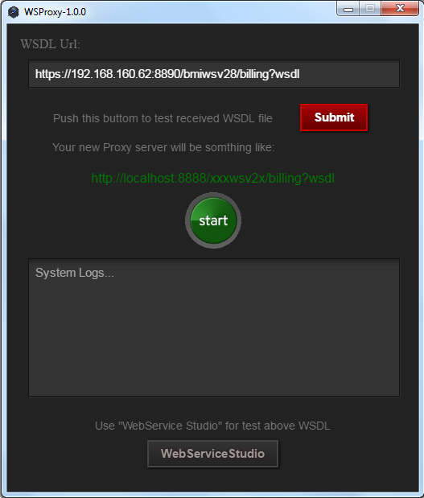
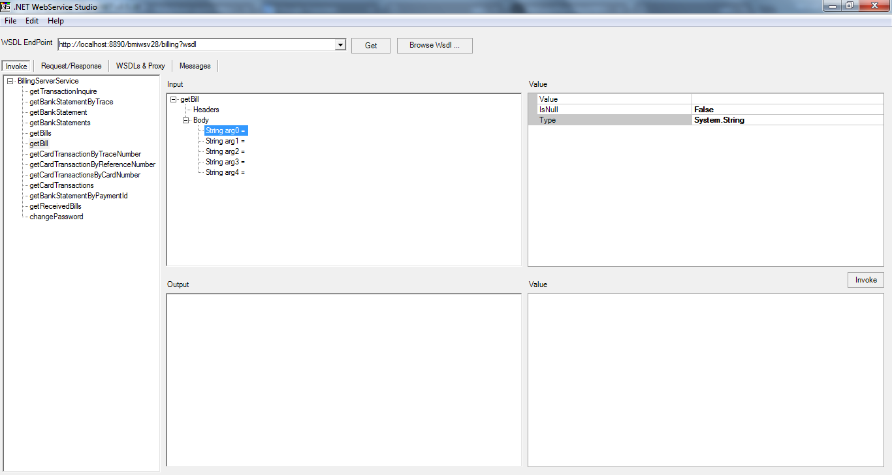

راهنمای پروکسی
بهنام رئیسی فرد
021-2586-4499
b_raeisifard@isc.iranet.net
نسخه مستند: 1.0.0 شهریور 1395
این مستند راهنمای نرم افزار WSProxy1.0.0 می باشد.
این نرم افزار جهت تسهیل در اتصال به وب سرویس های شرکت خدمات انفورماتیک که تحت بستر ارتباطی “https://” ارائه می شوند می باشد.
مقدمه
کاربران این نرم افزار چه کسانی هستند؟
نرم افزار “پروکسی وب سرویس” که به اختصار به آن پروکسی خواهیم گفت جهت تسهیل اتصال کاربران به سیستم وب سرویس سانی شرکت خدمات انفورماتیک تهیه شده است.
شرکت ها و سازمانهاییکه مشترک وب سرویس سانی شرکت خدمات انفورماتیک می باشند موظف اند نرم افزار کلاینت مورد نیاز خود را با توجه به استاندارد های معرفی شده شرکت(Soap message, https, ssl3 و …) تهیه و به وب سرویس سانی متصل نمایند.
به همین منظور لازم است در نرم افزارهای نوشته شده تنظیمات ویژه جهت انطباق با استانداردها و پرتکلهای امنیتی موجود در این سیستم لحاظ گردد. نرم افزار پروکسی معرفی شده با اعمال تمامی سطوح امنیتی، برنامه نویسان کلاینت را از پرداختن به چنین موضوعاتی فارق می کند.
این نرم افزار چه مشکلاتی را حل می نماید؟
- اعمال فایل کلید لازم جهت اتصال https.
- بکارگیری پروتکل امنیتی tls3 درارسال و دریافت داده.
- ارائه نرم افزار کلاینت (WebServiceStudio) جهت تست و بررسی وب سرویس سانی.
تهیه و نصب نرم افزار
نحوه تهیه نرم افزار
این نرم افزار را می توانید از طریق بانک (شعبه ثبت نام کننده وب سرویس سانی) و یا امور مشتریان شرکت خدمات انفورماتیک دریافت کنید. همچنین می توانید آخرین نسخه نرم افزار پروکسی را از طریق اینترنت و از آدرس زیر دانلود نمایید:
https://github.com/BehnamRaeisifard/WSProxy
ملزومات نرم افزار
نرم افزار پروکسی بصورت پرتابل و بدون نیاز به نصب جهت استفاده برروی سیستم های ویندوز 64 بیتی تهیه شده است. این نرم افزار بصورت کاملاً مستقل اجرا شده و نیازی به فریم ورک خاصی ندارد.
روش نصب نرم افزار
جهت نصب نرم افزار پروکسی ابتدا آنرا برروی هارد درایو سخت افزار خود ودر محل مورد نظر کپی نمایید (درصورت نیاز آنرا از حالت فشرده(zip) خارج نمایید).
برای اجرا کافیست فایل WSProxy.exe را اجرا نمایید.
آشنایی با رابط کاربری
با اجرای فایل WSProxy.exe نرم افزار پروکسی به شکل زیر اجرا می گردد.
رابط کاربری این نرم افزار ساده و شامل 6 بخش می باشد.

در قسمت اول (WSDL Url) شما باید آدرس URL وب سرویس سانی را که جهت استفاده شما ارائه شده است را در این قسمت وارد نمایید.
دقت نمایید در ابتدای این آدرس کلمه https ودر انتهای آن wsdl آمده است.
درصورتیکه هر جزء این آدرس به اشتباه وارد شود، نرم افزار با خطا مواجه خواهد شد.
پس از اینکه آدرس وب سرویس سانی را بطور کامل در Inputbox درج نمودید. دکمه Submit که برنگ قرمز می باشد را کلیک نمایید. در این حالت نرم افزار با استفاده از آدرس وارده، فایل WSDL مربوطه را از سرور سانی درخواست و آنرا درون پنجره ای جدید نمایش می دهد.

درصورتیکه نرم افزار بتواند با سرور سانی ارتباط برقرار کند و فایل WSDL درخواستی را بطور کامل دریافت نماید آنگاه آدرس جدیدی را جهت استفاده در برنامه کلایت شما ارائه می کند(خط سبز رنگ) که می توانید آنرا از طریق لینک “Copy to Clipboard”
در حافظه Clipboard سیستم عامل ویندوز کپی و نهایتاً در جای مناسب درون کد برنامه کلاینت خود کپی نمایید.
همانطور که احتمالاً متوجه شده اید، آدرس جدید یک URL است که تمامی اجزای URL وارده را دارا می باشد بجز اینکه بصورت Local است و همچنین بجای پرتکل https از پرتکل http ساده استفاده می نماید.
حال اگر شما دکمه سبز رنگ start را کلیک نمایید، سرور local وب سرویس، راه اندازی گردیده و برروی url تولید شده (سبز رنگ) سرویس خود را همانند سرور سانی ارائه می کند.
در textbox موجود شما می توانید log سیستم را مشاده نمایید در صورتیکه متن زیر در آن به نمایش درآمده باشد، شما موفق به راه اندازی سرویس محلی سانی شده اید.
dd-MM-YYYY hh:mm WS is starting…
در نهایت می توانید از نرم افزار WebServiceStudio جهت تست و بررسی وب سرویس سانی استفاده نمایید.

کافیست url تولید شده را در آن کپی و سپس تک تک متد های نشان داده شده در نرم افزار را با مقدار دهی آرگیومان های آن ملاحظه کنید.
نحوه عملکرد برنامه
نرم افزار پروکسی بعنوان یک واسط میان نرم افزار کلاینت و سرور سانی عمل نموده و تمامی درخواست های وب سرویس دریافتی از کلاینت را از پروتکل http به پرتکل https تبدیل می نماید، سپس آنها را به سمت سرور سانی هدایت می کند و پاسخ های مربوطه را که از سمت سرور سانی می رسد، از پرتکل https به پرتکل http منتقل می نماید و تحویل نرم افزار کلاینت می دهد.
توصیه ها و روزآمدی برنامه
نکات:
این نرم افزار باید بصورت local و در کنار نرم افزار کلاینت قرارگیرد.
- دسترسی مورد نیاز نرم افزار به پورت داده شده از طریق firewall ویندوز داده شود.
- در صورت روزآمد شدن سرور سانی این نرم افزار نیز متعاقباً روزآمد می شود که شما می توانید از طریق آدرس url معرفی شده نرم افزار پروکسی خود را روزآمد نمایید.
Tip: Check out the Download WSProxy site for a fresh version of software regularly.